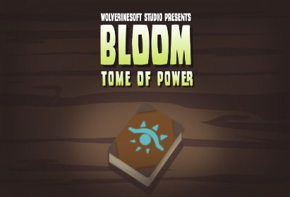
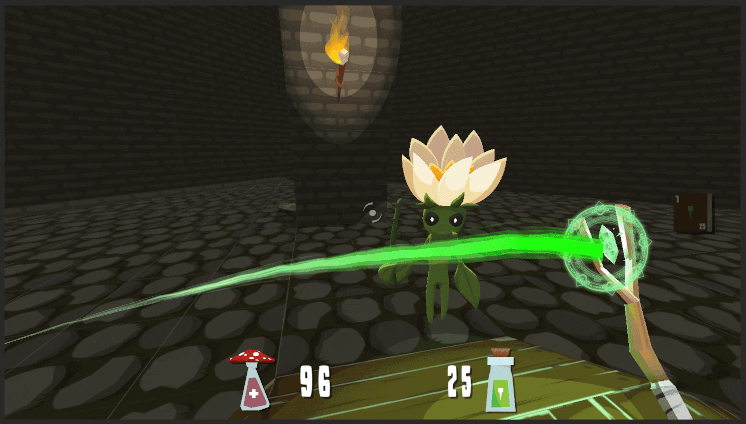
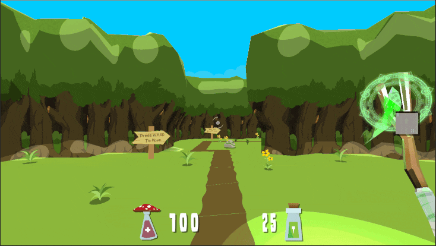

Bri Epstein (bdepst) Dev Blog 4: 11/28/21
Welcome to my fourth devblog for Project Bloom!

The first main time investment was weekly meetings. We’ve had a couple weekly meetings which involved tasks such as playtesting and generating ideas for improvement and discussing plans for the designs and what to work on for the week, taking up 4 hours total.

Next, I was tasked with implementing knockback. This is for both the player and enemies, knocking either back when they take damage. This has proved to be quite difficult, as I’m most familiar with the weapons systems, and there are many interacting systems in place for movement for both the player and enemies, so there’s a lot of new code to learn. For example, the original player movement implementation always “pushes” the player to their desired speed, which would make a knockback end almost instantly and feel very unnatural. Just for this one issue, there’s a lot of work like adding a way to keep track of whether the player is currently being knocked back (after being hit until velocity is below a certain amount?) and then using that to control whether or not the player’s normal movement functions are enabled. After testing different methods of implementing knockback, I ended up doing it by coming up with a new velocity based on the knockback force to send into the character controller and having it “push” the speed back to zero over time, emulating a natural, smooth- feeling knockback without interfering too much with the way the player’s movement is implemented.
Implementing knockback for the enemies ended up being much more challenging. They have to be able to keep moving with the nav mesh even after being hit, so there’s a lot to keep track of. This was very frustrating, as I was not super familiar with nav mesh stuff and kept running into different issues. I at first tried the “intuitive” way to implement knockback by applying a force to the enemy’s rigidbody, but the collisions for the enemy are actually handled in children of the enemy game objects, and it turns out that applying a force to those rigidbodies could seemingly decouple them from the main nav mesh agent and cause weird issues. I played around with lots of other things, like adding a rigidbody to the main enemy game object, and messing with the nav mesh agents’ parameters and movement methods. In the end, after struggling through all the different options I ended up figuring out that nav mesh agents and physics don’t work well together… and that my best bet was setting NavMeshAgent.velocity to something new and marking the enemy as being knocked back until its velocity is low enough, during which time its normal movements are disabled. There were many additional optimizations needed, and merge conflicts which I had to fix. These included public variables, for example so that different enemies can be affected or not by knockback, so that different player spells or enemy attacks have different knockback forces, and so that different enemies can receive knockback to varying degrees. There were certain small issues I ran into, such as certain enemies seemingly not responding to knockback even when enabled, which ended up being due to the enemy’s scale being low, which in turn seemingly affected its adjusted velocity from the nav mesh agent, so that final public variable was the solution for such a case. All in all, I spent around 8 hours this sprint on the different forms of knockback and all the fixes needed.

After knockback, I improved upon the crosshair for the player. Here, the crosshair increases in size as the heat stacks, and therefore inaccuracy, increase for an overheated weapon in this short test. In other FPS games such as Counter-Strike, there’s usually some crosshair indication of your current inaccuracy due to factors such as prolonged shooting, so this is the same idea using the different crosshairs’ animators. The crosshair also slowly reduces in size again as the heat stacks decrease or, in this case after hitting the heat limit and becoming unable to shoot it slowly shrinks to let the player know it’s still cooling off. I made various optimizations, such as doing this above messaging through an easy-to-use Unity Event invoked by the general weapon manager, so that the crosshair could be connected to general weapon data more easily. Additionally, there were weird small issues, like the fact that before, when switching weapons, the crosshair might change, but even though there was a visible difference there were actually completely new crosshairs being added to the hierarchy with each change without deleting the old one, so eventually it would be flooded with these. Working on improving the messaging and other such changes to the crosshair ended up taking me around 3 hours.
Finally, I had the rather vague task assigned to me of playtesting the game repeatedly and finding any new bugs, such as places where the player might get stuck for example or finding things I could break, like potentially bringing the ammo into the negatives with well- timed bursts at overheat-increased fire rate. This is a rather tedious task, but it makes sense that this is something to be done as we approach the final deliverable. I spent 7 hours this sprint on this. When I had nothing else to do, I would put time into this, as I didn’t have much else in the way of active tasks, plus it was the break and it was an easy thing to drop a bit of time into when I had the chance.
In addition, I spent another 2 hours on other miscellaneous activities, such as helping others with the weapon stuff that I was familiar with, or talking over bug causes and fixes, or implementations for other tasks.
Time investment:
Meetings | 4 hrs |
Knockback | 8 hrs |
Crosshair Improvements | 3 hrs |
Playtesting + Bug Fixes | 7 hrs |
Misc | 2 hrs |
Total | 24 hrs |